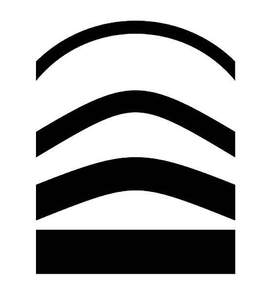

Trade Mark Journal No.2025/035 29 August 2025
UK00004249888 15 August 2025 (3,5,9,10,18,20,21,24,25,28,30,35,36,38,41,42,43,44)

International priority date claimed: 11 March 2025
(Australia)
(2529296)
- Class 3
- Essential oils, aromatherapy preparations, aromatherapy oil, scented oils, reed diffusers, refills for diffusers for air fragrancing preparations, soap and bath preparations, body and beauty care cosmetics, cleansers for cosmetic use, cloths impregnated with a skin cleanser, all in the field of wellness, sleep health, sleep hygiene, insomnia, chronic disease, sleep disorders and respiratory disorders; liquid soap.
- Class 5
- Teas for medicinal use, nutritional supplements for human beings, nutritional health care preparations and supplements, pharmaceuticals, medical and veterinary preparations; sanitary preparations for medical purposes; plasters, materials for dressings; disinfectants; pharmaceutical preparations for skincare; all in the field of wellness, sleep health, sleep hygiene, insomnia, chronic disease, sleep disorders and respiratory disorders.
- Class 9
- Downloadable software for accessing data, information, education and insights in the field of wellness, sleep health, sleep hygiene, insomnia, chronic disease, sleep disorders and respiratory disorders; downloadable software for CBTi therapy for the treatment of insomnia; apparatus for generating noise, eyeglasses and sunglasses, sensors, detectors and monitoring instruments, audio devices, sound and music recordings, audio analyzers, wearable technological devices, all in the field of wellness, sleep health, sleep hygiene, insomnia, chronic disease, sleep disorders and respiratory disorders; computer software for medical use; computer software for use in conjunction with treatment and management of respiratory disorders including patient management software, inventory management software, and patient compliance; headsets for playing video games; headsets for electronic gaming; Virtual reality headsets; augmented reality headsets; parts of virtual reality and augmented reality headsets, including frames for virtual reality headsets, frames for augmented reality headsets, cushions for virtual and augmented reality headsets, head straps for virtual and augmented reality headsets, and linings for virtual and augmented reality headsets; headsets for use with computers; control apparatus for computers; peripheral control devices for computers; headgear adapted to secure audio electronic apparatus to the head; headgear adapted to secure visual electronic apparatus to the head; downloadable computer software for data management, diagnostic testing and workflow, inventory management, supply ordering, and patient screening, scheduling, tracking and engagement, all for sleep diagnostic centers and clinics; Downloadable mobile application software for data management, diagnostic testing and workflow, inventory management, supply ordering, and patient screening, scheduling, tracking and engagement, all for sleep diagnostic centers and clinics; Downloadable mobile applications for management of workflow, clinicians, and data for home health, hospice and outpatient care, inpatient care, and therapeutic practice; telecommunications hardware for monitoring and alerting remote sensor status via the internet or wireless networks; electronic transmitters for communicating data from electronic medical sensors.
- Class 10
- Medical devices for use in the field of wellness, sleep health, sleep hygiene, insomnia, chronic disease, sleep disorders and respiratory disorders and accessories therefor; cushions and pillows for medical purposes, mattresses for medical purposes, patient positioning tools for medical use, massage apparatus for the eyes, massage apparatus for personal use, light therapy devices, light emitting diode masks for therapeutic use, sensors for medical use, ear plugs for noise reduction, wearable monitors used to measure biometric data for medical purposes, all in the field of wellness, sleep health, sleep hygiene, insomnia, chronic disease, sleep disorders and respiratory disorders; medical apparatus, namely, continuous positive airway pressure (CPAP) and automatic positive airway pressure (APAP) devices and parts therefor; medical ventilators and parts therefor; respirators for artificial respiration and parts therefor; humidifiers for medical use and parts therefor; respiratory masks for medical purposes and parts therefor; headgear for medical respiratory masks and parts therefor; cushions for medical respiratory masks; medical, dental and oral devices for diagnosing, treating and monitoring bruxism, mandibular orthosis, respiratory sleep disorders, sleep apnea and snoring; devices for screening, monitoring and diagnosing respiratory and sleep disorders; parts for all the foregoing all for use with medical devices for wellness, sleep health, sleep hygiene, insomnia, chronic disease, sleep disorders and respiratory disorders; accessories for all the foregoing all for use with medical devices for wellness, sleep health, sleep hygiene, insomnia, chronic disease, sleep disorders and respiratory disorders, including chin restraints, water tubs, oxygen diverter valves, tubing wraps being insulation for air delivery tubes, air tubes, filters, bags.
- Class 18
- Luggage and carrying bags.
- Class 20
- Beds; bedding, except linen; pillows; mattresses; mattress bases.
- Class 21
- Cups, mugs, bottles, drinking vessels; heat-insulated containers for beverages.
- Class 24
- Bed linen; bed blankets; bed covers; bedsheets; pillowcases; mattress covers; mattress protectors (other than incontinence).
- Class 25
- Sleeping attire; sleepwear; pyjamas/pajamas; slippers; dressing gowns; bed socks; sleep masks; smart clothing; headwear; headwear incorporating electronic sensors; sports headgear (other than helmets).
- Class 28
- Apparatus for games; apparatus for electronic games; controllers for use with electronic games; gaming apparatus (other than software); motion controllers for computer and video games.
- Class 30
- Coffee; Coffee-based beverages; Tea; Tea-based beverages.
- Class 35
- Retail or wholesale services for medical devices and parts and accessories therefor; retail or wholesale services featuring therapeutic and nontherapeutic goods in the field of wellness, sleep health, sleep hygiene, insomnia, chronic disease, sleep disorders and respiratory disorders and the aid and promotion of sleep; providing administrative service for patient notification of medical supply levels, ordering and tracking of medical supplies, patient reporting, and medical document storage; supply (sale) of medical equipment and medical consumables via subscription services; arranging of subscriptions for supply of medical equipment and medical consumables for others; Billing services in the fields of home health and hospice care, and home and durable medical equipment; administrative services for medical referrals; Best practices business consultation in the fields of home health and hospice care, and home and durable medical equipment.
- Class 36
- Providing customer service for medical insurance and payment tracking.
- Class 38
- Telecommunication services, namely, providing electronic message notification alerts, in the form of emails, text messages, and other electronic communications, in the field of wellness, sleep health, sleep hygiene, insomnia, chronic disease, sleep disorders and respiratory disorders.
- Class 41
- Education services in the field of wellness, sleep health, sleep hygiene, insomnia, chronic disease, sleep disorders and respiratory disorders; patient coaching in the field of wellness, sleep health, sleep hygiene, insomnia, sleep disorders and respiratory disorders; education services, namely, providing a learning center featuring training in relation to the management of sleep apnea and other sleep disordered breathing conditions; providing informal online training programs in relation to the management of sleep apnea and other sleep disordered breathing conditions; and providing personal instruction and coaching in relation to the management of sleep apnea and other sleep disordered breathing conditions; providing educational information in relation to the management of sleep apnea and other sleep disordered breathing.
- Class 42
- Software as a service, namely, providing software for tracking, monitoring and reporting of data relating to wellness, sleep health, sleep hygiene, insomnia, chronic disease, sleep disorders and respiratory disorders; providing temporary use of on-line non-downloadable software and applications for patient monitoring and compliance management in the field of sleep-disordered breathing; providing on-line non-downloadable software for use in inventory management, electronic billing and collections, electronic physician prescription generation and management, online procurement and electronic commerce, on-line security and privacy, medical records management, report generation, data and database management, customer relationship management, bar coding, contract management and administration, rehabilitation management, patient compliance, point of sale transactions, data sharing, audit response, office workflow and compliance management, management of clinicians and data, all of the foregoing in the fields of home and durable medical equipment; providing online non-downloadable proprietary software to evaluate, analyze and collect service data in the fields of home and durable medical equipment for the purpose of data automation; software as a service (SAAS) services featuring software for data management, diagnostic testing and workflow, inventory management, supply ordering, and patient screening, scheduling, tracking and Engagement, all for sleep diagnostic centers and clinics; Providing online non-downloadable software for data management, diagnostic testing and workflow, inventory management, supply ordering, and patient screening, scheduling, tracking and engagement, all for sleep diagnostic centers and clinics; non- downloadable software for the purpose of medical supply levels, medical supply orders and order tracking, medical insurance and payment tracking, patient reporting, and medical document storage; providing on-line non-downloadable software for use in inventory management, electronic billing and collections, electronic physician prescription generation and management; providing on-line non-downloadable software for use in online procurement and electronic commerce, on-line security and privacy, medical records management, report generation, data and database management, customer relationship management, bar coding, contract management and administration, rehabilitation management, home infusion therapy, patient compliance, care team workflow planning and scheduling; providing on-line non-downloadable software for use in point of sale transactions, data sharing, audit response, office workflow and compliance management, management of clinicians and data; Software as a service, namely, providing software for data automation and collection; computer services, namely, providing on-line, non-downloadable, web- based software for creating, accessing, storing, saving and managing clinical, patient, financial, marketing, and quality improvement information for use by long term care facilities, nursing homes, skilled nursing facilities, assisted living facilities, independent living, rehabilitation, behavioural health, home health, hospice, and health or medical care facilities; consulting services, implementation, optimization, technical support services, and maintenance services with respect to web-based computer software for use by long term care facilities, nursing homes, skilled nursing facilities, assisted living facilities, independent living, rehabilitation, behavioural health, home health, hospice, and health or medical care facilities .
- Class 43
- Café services.
- Class 44
- Medical services in the field of wellness, sleep health, sleep hygiene, insomnia, chronic disease, sleep disorders and respiratory disorders; Providing patient information relating to wellness, sleep health, sleep hygiene, insomnia, chronic disease, sleep disorders and respiratory disorders via an online portal; Providing CBTi therapy to patients for the treatment of insomnia via an online portal; best practices consultation in the fields of home health and hospice care, and home and durable medical equipment for healthcare treatment purposes; Medical equipment rental; supply (rental) of medical equipment via subscription services.
Resmed Pty Ltd
Representative: Stevens Hewlett & Perkins